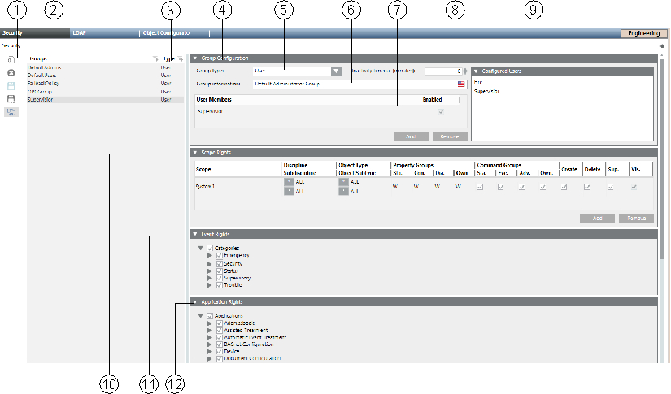
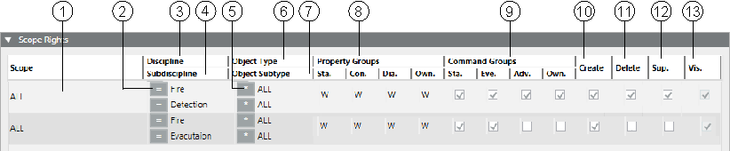
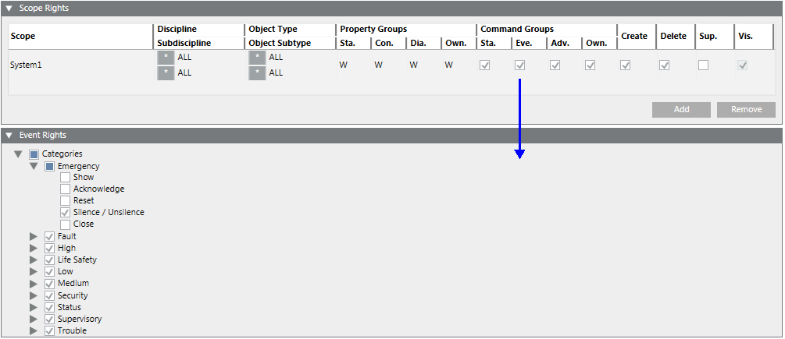
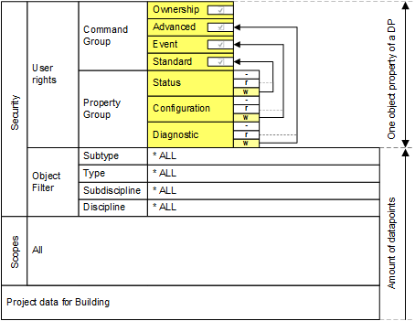
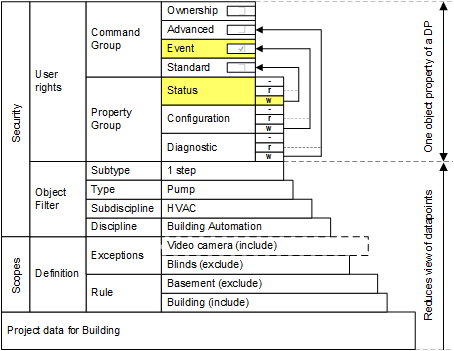
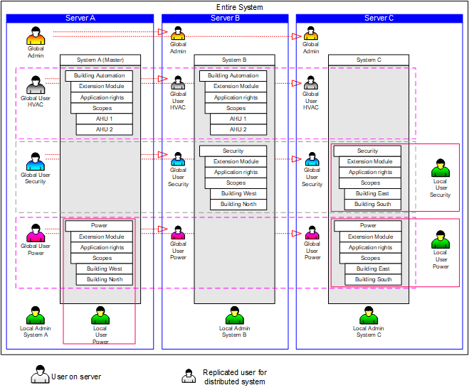
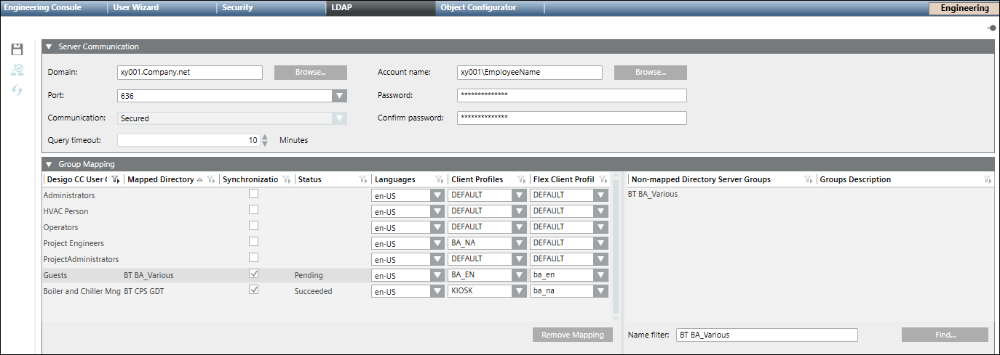

User Group Administration
Describes the behavior in Desigo CC for:
- Default user groups
- Fallback policy
- Default administrator
- Default user
- User groups
- Access rights
- Full
- Restricted
User Group Administration
In the Security tab, you can:
- Create a new local user group, global user group or management station group
- Assign a user to a user group
- Assign Scope rights to the user group
- Define the application rights

User Administration Workspace | ||
| Name | Description |
1 | Toolbar | Displays the icons for operations such as Add, Delete or Save. |
2 | Groups | Lists all default groups and created user and management station groups. In a distributed system, the check box in the Global column indicates the type of user group. This column is only displayed in distributed systems. |
3 | Type | Displays assignment based on settings in the Group type field. |
4 | Group Configuration expander | Displays the user group settings and list of members. |
5 | Group type | Defines whether it is a user group or management station group. |
6 | Group information | Shows advanced information on the related group. |
7 | User Members | Lists all members belonging to this group. Does not display a user under the FallbackPolicy (see Default User Groups) |
8 | Inactivity timeout [minutes] | System is locked if there is no user activity for a set period of time, so that the user has to log on again. 0 = no timeout is set. If a user belongs to more than one user group or management group, the lowest time greater 0 becomes active as an inactive timeout time. |
9 | Configured Users expander | Lists possible candidates that can be added to the selected group. Does not display a user under the FallbackPolicy (see Default User Groups) |
10 | Scopes Rights expander | Defines the Scope rights assigned to this group. It is displayed if rights are configured for a Scope that no longer exists. Such a Scope right gets ignored in runtime authorization. |
11 | Event Rights expander | Defines the event rights assigned to this group. The Event check box in the Command Groups section must be enabled to activate the event rights. |
12 | Application Rights expander | Defines the applications and functions (toolbar display) displayed, or that can be operated for the user or management platform. |
Scope Rights Workspace in User Groups
Scopes (see Scopes) are used in various applications such as Journaling, Notifications, and macros, to define display and operation. In Security, Scopes are used to configure access rights for a group. You can assign several Scopes to a group, which allows you to configure different rights on a Scope for different filter settings, such as Discipline, Subdiscipline, Object Type or Object Subtype.

| Name | Description |
1 | Scope | List of assigned Scope definitions. In a distributed system, a right-click displays a menu from which you can select a global or a specific system. |
2 | Operand for disciplines and subdisciplines. | *, = or ≠ *Full access to all objects. =Only objects that match the selection. ≠All objects that do not correspond to the selection. |
3 | Discipline | List of available disciplines. |
4 | Subdiscipline | List of available subdisciplines. |
5 | Operand for type and subtype. | *, = or ≠ |
6 | Object Type | List of available types. |
7 | Object Subtype | List of available subtypes. |
8 | Property Groups | Define property operation and display. You can set four groups of properties:
to one of the following values: NOTE: Properties are assigned to one of the groups in the object model configuration. |
9 | Command Groups | Defines for the Operation or Extended Operation tabs, if a button is accessible. You can enable four groups of commands:
NOTE: The commands (related to object properties) are assigned to one of the groups in the object model configuration. |
10 | Create | In the selected application, new objects, for example, folder or network, can be created in System Browser and saved. While saving, an error message displays if you have insufficient rights. |
11 | Delete | In the selected application, available objects, for example, folder or network, can be deleted |
12 | Supervise | An activated supervise check box allows the user to confirm modifications on the system when four eyes confirmation is required. |
13 | Visible | Always active and cannot be changed. All data points matching the Scope filter are visible. |
 in System Browser and saved. While deleting, an error message displays if you have insufficient rights.
in System Browser and saved. While deleting, an error message displays if you have insufficient rights. User Group and Management Station Group
Object visibility and rights can be set using a user group Scope and management station group Scope:
- User group Scopes act as OR (see Creating a New Global Group).
Rights Scope 1 |
| Rights Scope 2 |
| Rights Scope 3 |
| Rights for Scopes |
Yes | OR | No | OR | No | = | 1 |
Yes | OR | Yes | OR | No | = | 1 + 2 |
No | OR | Yes | OR | Yes | = | 2 + 3 |
Yes | OR | Yes | OR | Yes | = | 1 + 2 + 3 |
- User group Scopes and management station group Scopes act as AND (see Creating a New Management Station Group).
| User Group Scope |
| Management Station Group Scope |
| Visibility on the Management Station |
Scope Definition 1 | Yes | AND | No | = | No |
Scope Definition 2 | Yes | AND | Yes | = | Yes |
Scope Definition 3 | No | AND | Yes | = | No |
NOTICE

Scope Rights Assignment for Highly Protected Zones
Administrators configuring User groups and Scopes must limit visibility and write permissions and take responsibility for the permissions granted to accounts.
This is essential to ensure security of highly protected zones.
NOTICE
No More Access Rights to the Project
A management station automatically has full access rights to all objects for a project if the station is not assigned to a management station group. If Scope rights and application rights are not correctly assigned, you can revoke all rights for the operation. In this case, you must restore the last project backup.
There is a risk that data saved after the last project backup is lost.
Event Rights
The Event Rights expander allows users associated with a user group to view events in the management station, issue commands and handle events with assisted treatment.
You must select the Eve. check box in the Command Groups section in the Scope rights expander to activate the event rights.
The expander displays the different categories of events such as Emergency, Fault, High, Life Safety, Low, Medium, Security, Status, Supervisory, and Trouble along with options to issue commands for the following activities:
- Show: Display events of the specified event category
- Acknowledge: Acknowledge the occurrence of an event of a specific event category
- Reset: Reset the event by resetting the value of the object that triggered the event
- Silence/Unsilence: Mute or Unmute the sound emitted by the event
- Close: Close the alarm instance for the specific event category

Default User Groups
The following user groups are already available for a new project:
- FallbackPolicy
- Users belong to the FallbackPolicy user group until assigned to a user group. Unassigned users are not displayed in Configured Users or in User Members.
- You can change settings and rights as needed.
- The FallbackPolicy user group cannot be deleted.
- DefaultAdmins
- The DefaultAdmin user has full access rights to the system by default. As a result, do not take rights away until you have defined your own administrator with full rights.
- You cannot delete the DefaultAdmins user groups and the DefaultAdmin user.
- You cannot add new users to this user group.
- Disable the DefaultAdmin user when handing over the project to the customer.
- DefaultUsers
- You cannot delete the DefaultUsers user group and the DefaultUser user.
- Users cannot be added or deleted.
- The DefaultUser is always active when the management station is in closed mode (Windows authentication).

NOTE 1:
Passwords for DefaultAdmin are defined for the first time during project creation by System Management Console.
NOTE 2:
The password can be changed in:
- Project > System Settings > Users > User Configuration > Change Password (by any administrator who has the right to configure users)
- By the DefaultAdmin using the Operator > Change password menu in the upper right of the Summary bar.
NOTE 3:
The password at the time of the last save applies when restoring a project. This is true as well if another password is defined during installation (for example, at the customer).
NOTE 4:
Assigning all rights to a user group administrator for project administration. The appropriate project administrators can be added and managed in this group.
User Groups
Using different user groups allows you to control user access rights for a project. User rights are granted in a group depending on activity or experience of individual users. The rights can be limited to:
- Applications
- Disciplines
- Disciplines configured directly within the user group
- Assigned using Scopes
The table below shows an example of different user group accesses to applications and disciplines.
Example User Groups | |||||
User Group | Default | Application Rights | Property Groups | ||
|
| Show | Configure | R (Read) | W (Write) |
FallbackPolicy | Yes | - | - | - | - |
DefaultAdmin | Yes | All | All | All | All |
DefaultUser | Yes | - | - | - | - |
Supervisor | No | All | All | All | All |
Group 1 | No | A+B+C | A+B | 1+2+3 | 1+2+3 |
Group 2 | No | A+B | A | 2+3 | 3 |
Group 3 | No | C | - | 3 | - |
Explanation based on user group 2:
- Application: A user of user group 2 can display and configure application A as needed (for example, modify objects). This user can only display application B, but not configure it. Application C is not accessible (does not display) to all users of this user group.
- Property Groups: A user of user group 2 can read and write discipline 3 in either application A or B (for example, change a data point). This user can only read discipline 2, but not write to it. Discipline 1 is not accessible (no read/write) to all users of this user group.
Access Rights
Full access rights
Access rights to an object in Desigo CC depend on various factors. You do not need to define Scopes if you want to assign full access rights to a user group. To operate and monitor, you must assign write rights for the property group and enable the command group. The following diagram illustrates full access rights:

User View of Structured BACnet Objects (full access) | ||||
Plant | Aggregate | Function | Property 1 | Property 2 |
Ventilation East | Supply air fan | 2-speed | Present value | Status flag |
Ventilation East | Pump | 1-speed | Present value | Status flag |
Ventilation East | Supply air temperature. | Expositions | Present value | Status flag |
Ventilation - Basement | Pump | 1-speed | Present value | Status flag |
Heating West | Pump | 1-speed | Present value | Status flag |
Security | Zone A | Manual | Present value | Status flag |
Restricted access rights
The following example illustrates how to define the operation of a property, for example, Present_Value for a single-speed pump. The display of the object is very limited. You can have a more open view of the objects using a wildcard in normal projects. The following illustrates restricted access rights:

You can detail the view of an object by using Scopes, Scope filter, and user rights. However, to operate and monitor, you must assign write rights for the status in the property group and enable the standard command group.
Restricted User View of Structured BACnet Objects
Plant | Aggregate | Function | Property 1 | Property 2 |
Ventilation East | Pump | 1-speed | Present value |
|
Heating West | Pump | 1-speed | Present value |
|
Member of Multiple User Groups
A user can be a member of multiple groups. Whether it makes sense to assign a user to more than one group depends on the definition of the groups. Users belonging to more than one group have all the rights provided by each of the groups.
You can create one group each with complete rights if you have three different kinds of operators. In this scenario it does not make sense to add a user to more than one group.
However, you can also define more detailed groups with each group possessing the rights for specified tasks in certain areas.
For example: A customer has a number of buildings with operators spread out among the buildings; each with full access to the local building, but restricted access to other buildings. You can define different operator groups for each building and assign the operator to building-specific groups with the appropriate rights. Users typically belong to more than one detailed group.
Smaller systems typically apply the former approach; larger and more distributed systems may prefer to take the latter approach.
Security in Distributed Systems
In distributed systems, there are local and global user groups and users.
Local User Groups and Users
Local user groups and users only exist on their respective management stations and are not synchronized with the master system. A local user must be created on his own system and only has access to that system.
Global User Groups and Users
Global user groups and users can only be created and managed on the master system. This global information is continuously synchronized with the distributed management stations. This means that a replica of the user group or user is created on every known management station. A global user has potentially access to objects on another system.
System Extensions
- The master system automatically updates any management platform that is added at a later point in time.
- Any newly added sub-system (extension module) has to be set to active in the Application Rights section, so that it can be operated globally (by the global administrator, for example).

LDAP Domain Groups
The Lightweight Directory Access Protocol LDAP is a directory information service based on the TCP/IP protocol. LDAP refers to the communication between the client and the LDAP server. All personal data of an organizational unit are managed on the LDAP server and can be transferred to Desigo CC as a user group if required.
For further information on LDAP please refer to specialist literature.
For related procedures or workflows, see the step-by-step section.

|
LDAP Tab | |
LDAP Toolbar | |
| Allows you to Save the configuration |
| Check Connection allows you to verify the connection to the server. |
| Allows you to Synchronize the mapping between the user group(s) and the server group(s). Limitation 1: Limit to add users from active mapped directory to user group for a Desigo CC system is: Limitation 2: Limit to add users from active mapped directory to individual user group is 1000. |
Server Communication Section | |
Domain | The domain name, for example, xy001.company.net. You can type the name or click Browse to find the desired domain name. |
Port | Allows to you select a port number from the drop-down menu:
|
Communication | Once you have selected a port number, allows you to select Secured or Unsecured from the drop-down menu. |
Query timeout | The maximum time that is configured for system to search results based on filter criteria. You can set the number of minutes from 1 to 60 (Default = 1 minute). If Query timeout is exceeded, you receive an information message. |
Account name | The account name. Either type the account name or click Browse to search and select the name Account User Notes: The account user:
|
Password | The account password. If you have a restored project this field may display password of the domain account user specified in the project on the source machine. You must make sure that the password of the domain account user must be the most recent and updated. |
Confirm password | The re-confirmed password. |
Group Mapping Section | |
Desigo CC User Group | The name of the user group. |
Remove Mapping | Allows you to remove the mapping(s) of one or more selected rows. |
Mapped Directory | The name of the server directory the user group is mapped to. |
Synchronization | If checked, the user group(s) and the associated directories will be mapped when a synchronization is activated from the toolbar. |
Status | The current status of the synchronization between a group and a directory server group: Pending - the synchronization has not occurred. Succeeded - The group and the directory server group are mapped. Failed - The group and the directory server group are not mapped. The synchronization failed. |
Languages | Defines the applied language of the user interface in Desigo CC. NOTE: After an LDAP import this setting is assigned, or overwritten for any existing users in the Users tab. |
Client Profiles | Defines the display of Desigo CC applications on the management station (affecting Summary Bar lamps, Event List, Event Detail Bar, and so on). For more information, see the Client Profile section. NOTE: After an LDAP import this setting is assigned, or overwritten for any existing users in the Users tab. |
Flex Client Profile | Flex Client Profile - Defines display of applications on the Flex Client (affecting Summary Bar lamps, Event List, Event Detail Bar, and so on). For more information, see the Flex Client Profile section. NOTE: After an LDAP import this setting is assigned, or overwritten for any existing users in the Users tab. Additionally, if a user belongs to two user groups, the last group imported to Desigo CC is assigned. |
Non-Mapped Directory Server Groups | List of available server names that are not mapped to an existing group. |
Groups Description | A description of the group. |
Name filter | Allows you to type the name of the server group to associate and synchronize with a user group. |
Find | Allows you to search the server for the name entered in the Name filter field. |